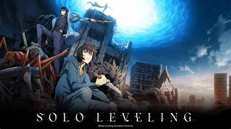
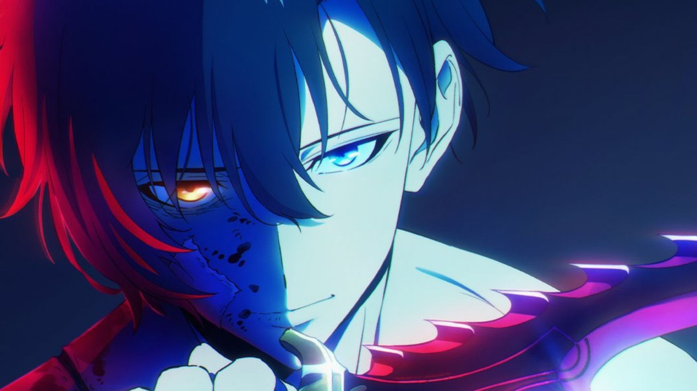

Sobre o Anime
"Solo Leveling" é baseado em uma popular novel sul-coreana escrita por Chugong, adaptada em manhwa e anime. A história acompanha Sung Jin-Woo em sua jornada de caçador mais fraco ao mais poderoso.
Sinopse
Sung Jin-Woo, um caçador de Rank E, luta diariamente para sobreviver até encontrar uma misteriosa missão que lhe concede um poder inédito: a habilidade de subir de nível sem limites.
Principais Informações
- Autor: Chugong
- Diretor do anime: Shunsuke Nakashige
- Estúdio: A-1 Pictures
- Gêneros: Ação, Fantasia, RPG
- Estreia do anime: 2024
Curiosidades
- O manhwa ficou em primeiro lugar em diversas premiações na Coreia.
- O autor planejava inicialmente matar Jin-Woo, mas mudou de ideia por popularidade.
- A trilha sonora do anime foi composta por Hiroyuki Sawano, famoso por Attack on Titan.